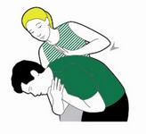
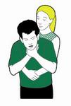

Adult Choking
Choking is when your airway gets blocked and you can’t breathe properly.
When someone chokes, the airway can either be partly or fully blocked.
If it’s a mild blockage, they should be able to clear it themselves by coughing.
If it’s a severe blockage, they won’t be able to cough so without anyone’s help they’ll become unresponsive.
Steps
- Encourage them to cough. If this doesn't clear the obstruction, support their upper body with one hand and help them lean forward.
- If coughing doesn’t work, help the casualty bend forward.
- Use the heel of your hand to give up to five sharp back blows between their shoulder blades.
- Check their mouth to see if there’s anything in there and, if there is, get them to pick it out.

- If back blows don’t work, give up to five abdominal thrusts. Stand behind them.
- Link your hands between their tummy button and the bottom of their chest, with your lower hand clenched in a fist.
- Pull sharply inwards and upwards.

- If they’re still choking, call 999 or 112 for medical help.
- Once you’ve called, continue steps 2 and 3 – back blows and abdominal thrusts – until what’s in there has cleared, help arrives or they become unresponsive.
- If they become unresponsive at any stage, open their airway and check their breathing.
- If they’re not breathing, start chest compressions and rescue breaths (CPR - cardiopulmonary resuscitation) to try to release whatever’s stuck in there. Follow the instructions for treating someone who’s unresponsive and not breathing.